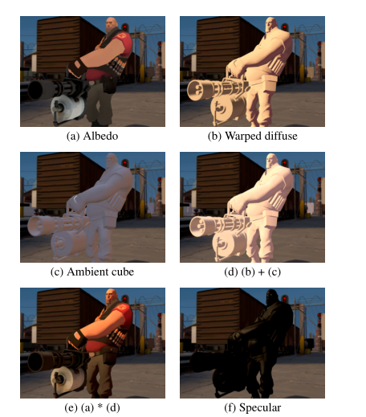
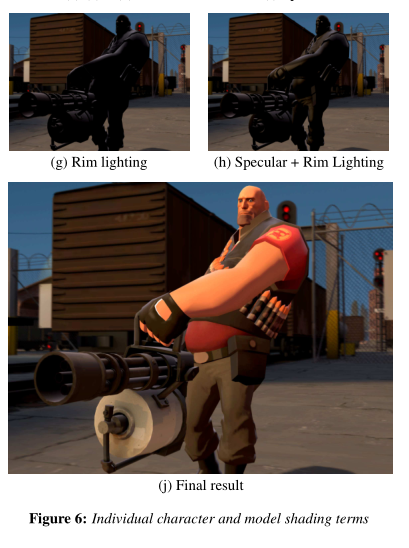

技术分析
论文中有一篇非常形象的图片来实现渲染效果


Albedo
// Albedo
half4 mainTex = SAMPLE_TEXTURE2D(_MainTex, sampler_MainTex, IN.uv) * _MainColor;
half4 albedo = mainTex;
half4 ambient = half4(unity_SHAr.w, unity_SHAg.w, unity_SHAb.w, 1.0);
直接采样人物的贴图，顺手再把其他的贴图也一并采样进来。
Wraped diffuse
论文中的光照实现公式为

在unity实现中使用ramp的方式即采样ramp时的uv 参数用halfLambert 组成的X分量，叠加上主光源即可。
// Half Lambert
half ndotL = max(0, dot(normalWS, lightDir));
half lambert = ndotL;
half halfLambert= saturate(lambert * 0.5 + 0.5);
half4 ramp = SAMPLE_TEXTURE2D(_RampMap, sampler_RampMap, half2(halfLambert, 0));
half4 wrapDiffuseTerm = ramp * lightColor;
Ambient
ambient实现比较复杂，这里直接抄unity urp中关于SH 求谐函数的代码
real3 SH_indirectDiffuse(real3 normalWS, real AO)
{
real4 SHCoefficients[7];
SHCoefficients[0] = unity_SHAr;
SHCoefficients[1] = unity_SHAg;
SHCoefficients[2] = unity_SHAb;
SHCoefficients[3] = unity_SHBr;
SHCoefficients[4] = unity_SHBg;
SHCoefficients[5] = unity_SHBb;
SHCoefficients[6] = unity_SHC;
real3 color = SampleSH9(SHCoefficients, normalWS);
return max(0, color) * AO;
}
View Independent Lighting Terms
half3 viewIndependentLightTerms = albedo * (indirectDiffuse+ wrapDiffuseTerm);

View Dependent Lighting Terms
论文中计算依赖视角的光照部分的公式

在依赖视角的光照部分中，《军团要塞2》除了考虑一般的Phong高光外，还基于菲涅尔现象实现了类似边缘光的效果。Specular就是式子中的左半部分，Rim lighting就是式子中的右半部分。
原版实现代码如下
//计算View Independent Lighting Terms
half3 viewIndependentLightTerms = albedo * (indirectDiffuse+ wrapDiffuseTerm);
// Specular
half fs = _FresnelSpecular;
half4 spec = fs * pow(ndotH, smoothness);
half4 specular = pow(spec, _KSpecular)* _SpecularColor * metalMask;
// Rim Lightingw
half kr = 0.5;
half fr = pow(1 - ndotV, 4);
half4 rim = kr * fr * pow(spec, _RimPower);
// Dedicated Rim Lighting
half4 aV = half(1);
half4 dedicatedRimLighting = ndotU * fr * kr * aV;
// Multiple Phong Terms
half ks = 1;
half4 multiplePhongTerms = ks * lightColor * max(specular, rim);
half4 viewDependentLightTerms = multiplePhongTerms + dedicatedRimLighting;
参考没有遮罩的时候，转换成另一种算法，同时替代phong高光为blinn phong。
添加Fresnel 效果的 multiplePhongTerms 高光模型
// 计算View dependent Lighting Terms
half halfVector = normalize(viewDirWS + lightDir);
half3 specular = pow(ndotH, 1);
half fresnel = pow(1 - dot(viewDirWS, halfVector), 5.0);
fresnel += 0.5 * (1.0 - fresnel);
half3 multiplePhongTerms = specular * fresnel * lightColor;

Rim Light 实现
half rim = 1.0 - saturate(ndotV);
half3 dedicatedRimLighting = _RimLightColor * pow(rim, _RimPower);

合成效果
half3 viewDependentLightTerms = albedo * lightColor * max(multiplePhongTerms, dedicatedRimLighting);
// Combine
half3 color = viewIndependentLightTerms + viewDependentLightTerms;

哦豁打完收工，忽略没有写投影pass。wrapped diffuse的效果提供明暗交界处有明显的泛红。